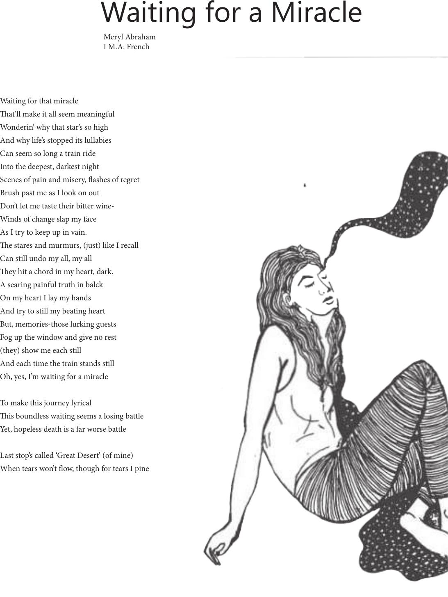

Meryl Abraham
I M.A. French
Waiting for that miracle
at’ll make it all seem meaningful
Wonderin’ why that star’s so high
And why life’s stopped its lullabies
Can seem so long a train ride
Into the deepest, darkest night
Scenes of pain and misery, ashes of regret
Brush past me as I look on out
Don’t let me taste their bitter wine-
Winds of change slap my face
As I try to keep up in vain.
e stares and murmurs, (just) like I recall
Can still undo my all, my all
ey hit a chord in my heart, dark.
A searing painful truth in balck
On my heart I lay my hands
And try to still my beating heart
But, memories-those lurking guests
Fog up the window and give no rest
(they) show me each still
And each time the train stands still
Oh, yes, I’m waiting for a miracle
To make this journey lyrical
is boundless waiting seems a losing battle
Yet, hopeless death is a far worse battle
Last stop’s called ‘Great Desert’ (of mine)
When tears won’t ow, though for tears I pine
Waiting for a Miracle